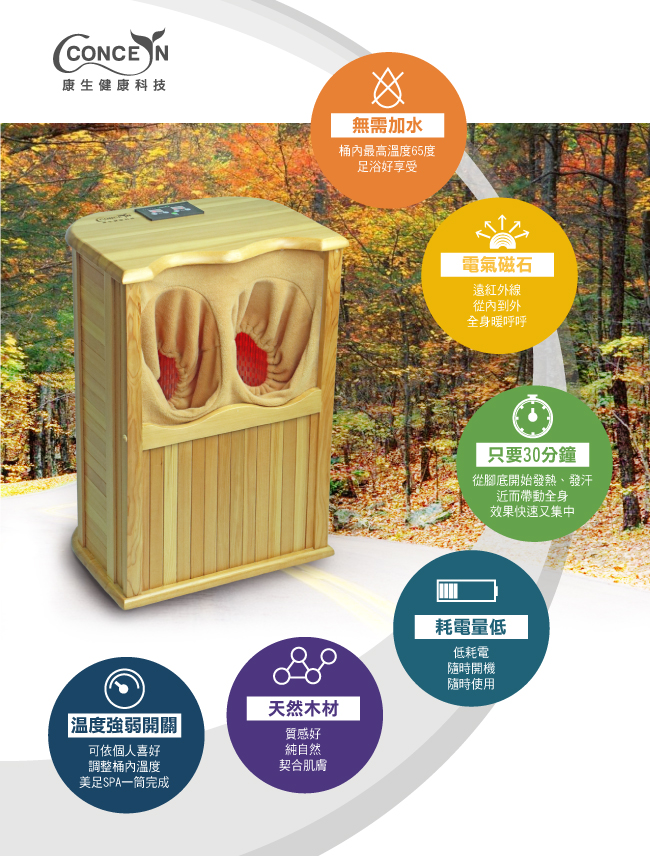
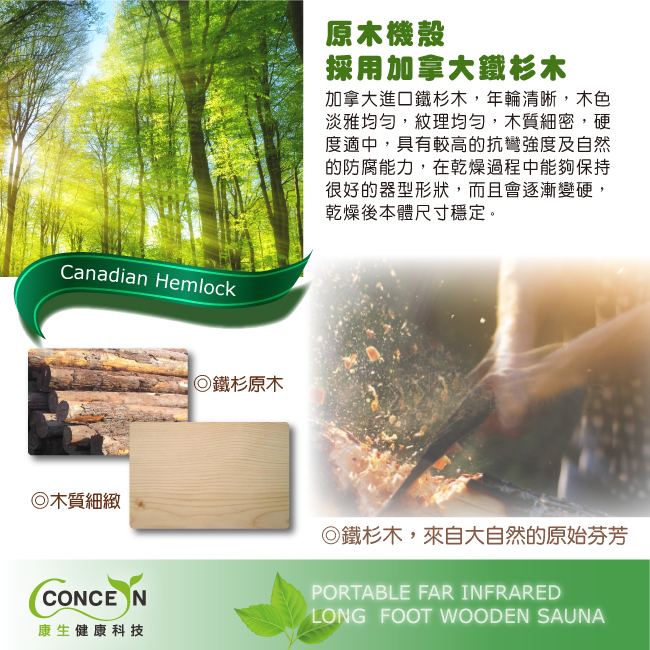
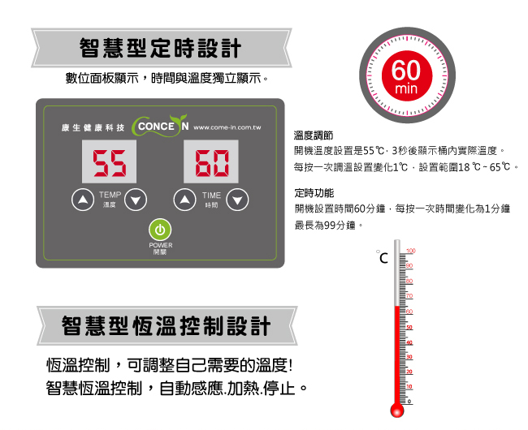
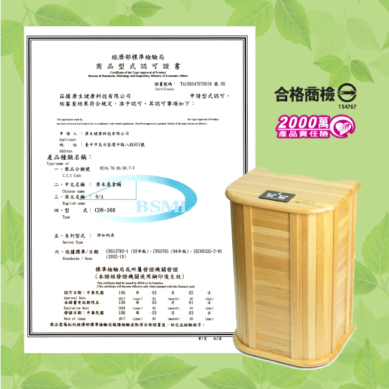
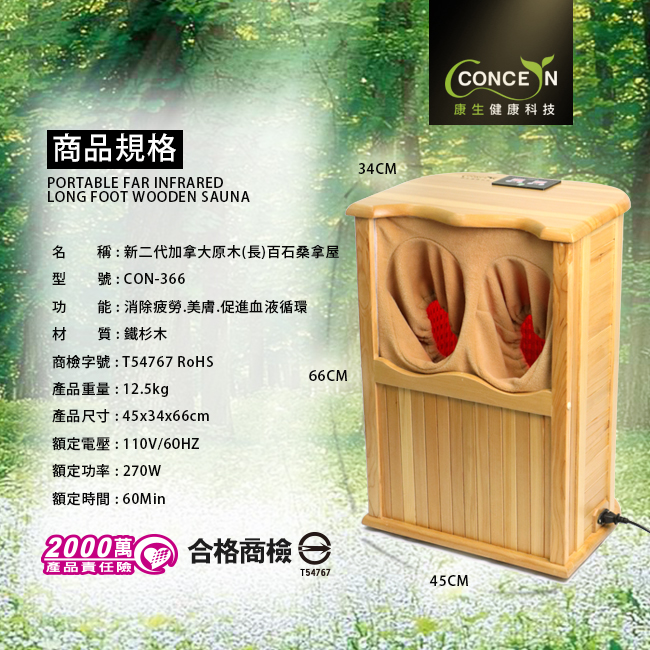
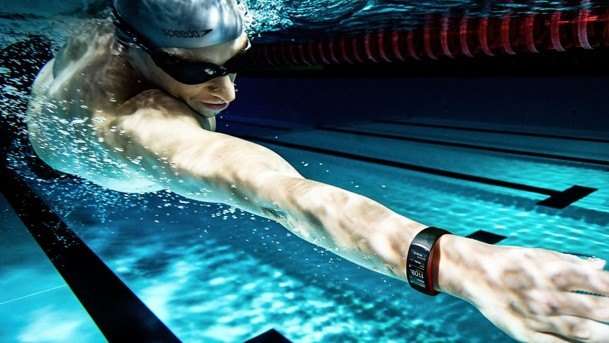

| 組合 | 商品 | 詳細規格 |
|:-----------------------:|:-----|:--------|
| 組合一 | 體重體脂肪機 HBF-375+低週波治療器 HV-F128 | 體重體脂肪機 HBF-375
低週波治療器HV-F128 |
| 組合二 | 體重體脂肪機 HBF-375+手臂式血壓計 JPN-601 | 體重體脂肪機 HBF-375
低週波治療器HV-JPN-601 |
| 組合三 | 體重體脂肪機 HBF-701+低週波治療器 HV-F127 | 體重體脂肪機 HBF-701
低週波治療器HV-F127 |
| 組合四 | 體重體脂肪機 HBF-701+手臂式血壓計 JPN-500 | 體重體脂肪機 HBF-701
低週波治療器JPN-500 |





需按售價補差額: TWD $3,960元
需按售價補差額: TWD $8,200元